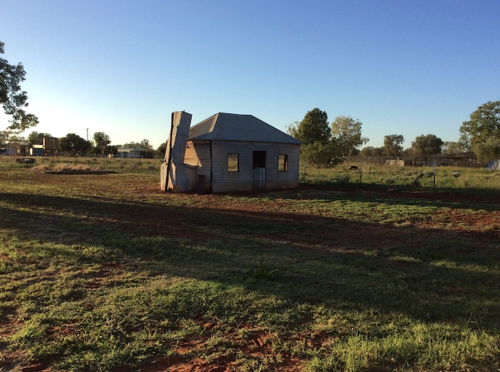
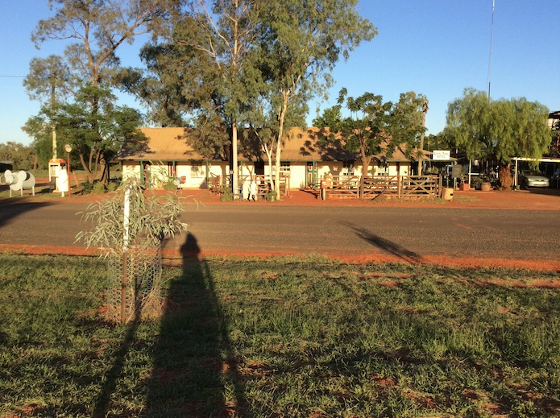
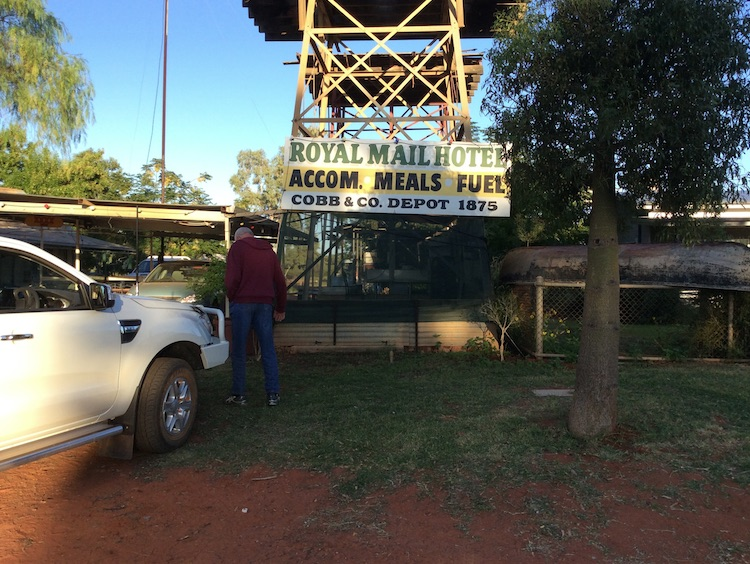
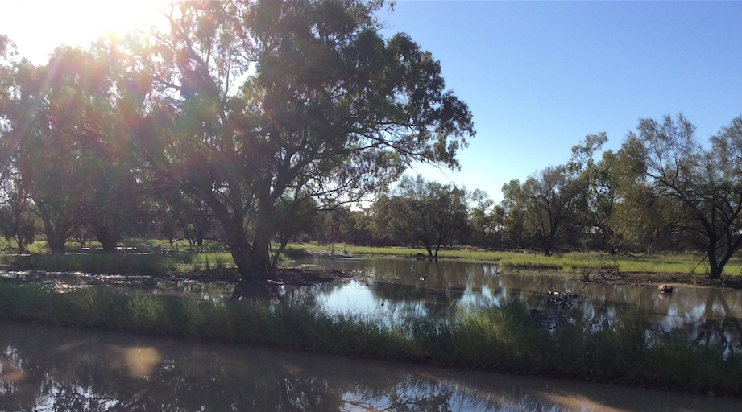

Other Stories

Hungerford has changed. There is now one deserted house on the NSW side and three houses on the Qld side.


The old Cobb and Co hotel (now heritage listed)

Lagoon where two brolgas landed after flying across in front of our car (they can be seen in the distance).
Hi, the above are images from Hungerford, where I went with my son on a
father/son road trip. The bit below is an extract from a Henry Lawson short
story about Hungerford (where he was sent by the Bulletin to sober up -
walking the 220 k from Bourke)'One of the hungriest cleared roads in New South Wales runs to within a
couple of miles of Hungerford, and stops there; then you strike through the
scrub to the town. There is no distant prospect of Hungerford - you don't
see the town till you are quite close to it, and then two or three
white-washed galvanised-iron roofs start out of the mulga.'They say that a past Ministry commenced to clear the road from Bourke,
under the impression that Hungerford was an important place, and went on,
with the blindness peculiar to governments, till they got to within two
miles of the town. Then they ran short of rum and rations, and sent a man on
to get them, and make inquiries. The member never came back, and two more
were sent to find him - or Hungerford. Three days later the two returned in
an exhausted condition, and submitted a motion of want-of-confidence, which
was lost. Then the whole House went on and was lost also. Strange to relate,
that Government was never missed.'However, we found Hungerford and camped there for a day. The town is right
on the Queensland border, and an interprovincial rabbit-proof fence - with
rabbits on both sides of it - runs across the main street...'Hungerford consists of two houses and a humpy in New South Wales, and five
houses in Queensland. Characteristically enough, both the pubs are in
Queensland. We got a glass of sour yeast at one and paid sixpence for it -
we had asked for English ale.'The post office is in New South Wales, and the police-barracks in
Bananaland. The police cannot do anything if there's a row going on across
the street in New South Wales, except to send to Brisbane and have an
extradition warrant applied for; and they don't do much if there's a row in
Queensland. Most of the rows are across the border, where the pubs are.'
My notes:
Hungerford has changed. There is now one deserted house on the NSW side and three houses on the Qld side (see attached pic of Qld house with iron chimney). See also a pic of the old Cobb and Co hotel (now heritage listed) and a lagoon where two brolgas landed after flying across in front of our car (they can be seen in the distance). Hungerford is quite pretty now, with a nice camping ground and some wonderful country about.
BACK